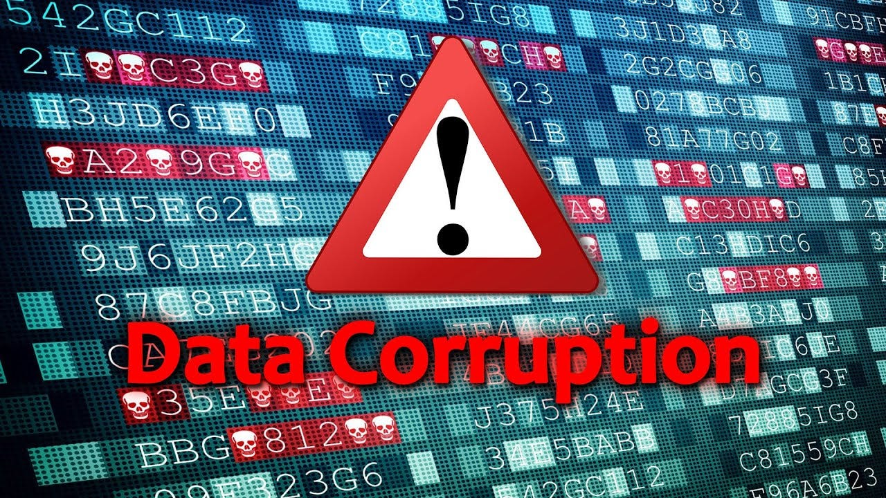
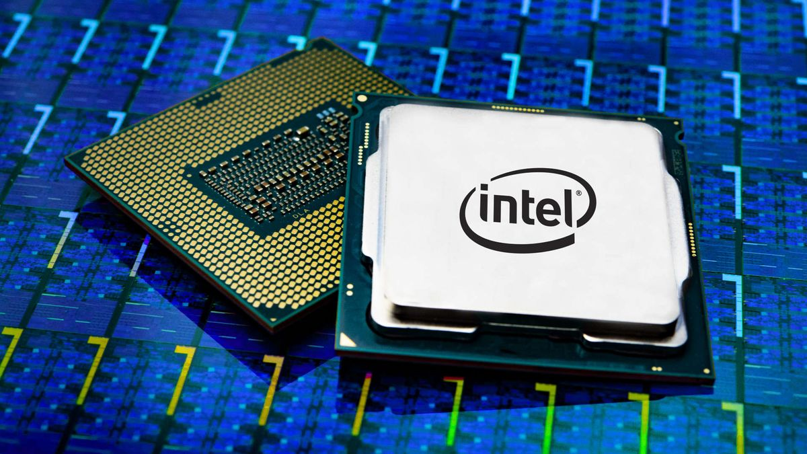

What is Digital Decay?
Digital decay refers to the deterioration or degradation of digital information, data, or content over time. This can occur due to various factors, including technological obsolescence, data corruption, bit rot, link rot, and format obsolescence. As technology advances, older file formats and storage devices become outdated, making it difficult or impossible to access or read digital content.
The consequences of digital decay can be significant, resulting in the loss of cultural heritage, historical documents, and personal data. For instance, old emails, photos, and videos may become inaccessible due to changes in file formats or storage devices. Moreover, digital art, music, and literature may be lost forever if not properly preserved. Therefore, it's essential to develop strategies for digital preservation, such as data migration, emulation, and backup systems, to mitigate the effects of digital decay.
Factors Involving Digital Decay
Technological Obsolescence
Technological obsolescence occurs when digital information becomes inaccessible due to outdated formats, hardware, or software. This can happen when technology advances rapidly, rendering older systems and formats obsolete. For instance, consider the evolution of music formats from vinyl records to cassette tapes, CDs, and finally digital streaming. Each new format has rendered the previous one obsolete, making it difficult to access music stored in older formats.
The consequences of technological obsolescence can be significant. For example, many old video games are no longer playable because the consoles and hardware they were designed for are no longer supported. Similarly, documents and files created in outdated software formats may become inaccessible over time. To mitigate these effects, it's essential to migrate digital information to newer formats and systems regularly.
Hardware Failure
Hardware failure is a common cause of digital decay, where physical components of a device or system fail or malfunction, leading to data loss or corruption. This can occur due to various factors, including wear and tear, overheating, physical damage, or manufacturing defects. For instance, a hard drive crash can result in the loss of critical data, while a faulty RAM module can cause a computer to malfunction or crash.
Hardware failure can be prevented or minimized by implementing regular maintenance and backup routines. This includes monitoring system logs for signs of hardware failure, running diagnostic tests, and replacing faulty components promptly. Additionally, using redundant systems, such as RAID (Redundant Array of Independent Disks), can help ensure data availability and prevent data loss in the event of hardware failure. By taking proactive steps to prevent hardware failure, individuals and organizations can reduce the risk of digital decay and ensure the long-term availability of their digital information.
Software incompatibility
Software incompatibility is a significant contributor to digital decay, where changes in software or operating systems render digital information inaccessible or unusable. This can occur when software or hardware vendors discontinue support for older formats or systems, or when new software versions are incompatible with legacy files. For instance, a document created in an outdated word processing software may become unreadable when the software is no longer supported.
Software incompatibility can be mitigated by adopting forward-thinking strategies, such as using open-source software, standardized file formats, and modular design principles. Additionally, creating multiple versions of digital files, using format-agnostic storage solutions, and maintaining up-to-date software and hardware can help ensure continued accessibility. By acknowledging the risks of software incompatibility and taking proactive steps, individuals and organizations can reduce the likelihood of digital decay and safeguard their digital assets.
Data Corruption
Data corruption occurs when digital information becomes altered or damaged, making it unreadable or unusable. This can happen due to various factors, including software bugs, hardware failures, and human error. Data corruption can result in the loss of critical information, financial losses, and damage to reputation. For instance, a corrupted database can lead to incorrect business decisions, while a corrupted image file can result in the loss of valuable visual data.
Data corruption can be prevented or minimized by implementing robust data validation and verification processes. This includes using checksums to detect data corruption, creating regular backups, and using error-correcting codes to detect and correct errors. Additionally, using reliable software and hardware, and following best practices for data management, can also help prevent data corruption.s
Cyber Threats
Cyber threats can significantly contribute to digital decay by compromising the integrity and authenticity of digital information. When malicious actors gain unauthorized access to digital systems, they can intentionally delete, modify, or destroy digital files, leading to permanent loss. Additionally, cyber attacks can result in corrupted data, making it unusable or unreadable. This can render digital information inaccessible, contributing to digital decay.
The impact of cyber threats on digital decay can be far-reaching. For instance, a ransomware attack can encrypt critical files, rendering them inaccessible until a ransom is paid. Even if the ransom is paid, there is no guarantee that the encrypted files will be restored. Furthermore, cyber attacks can lead to a loss of trust in digital systems, causing individuals and organizations to question the reliability and authenticity of digital information. This can accelerate digital decay, as digital information becomes increasingly inaccessible and unusable over time.
Preserving the Digital Age
Preventing digital decay is crucial for preserving our cultural heritage, promoting knowledge sharing, and ensuring the long-term accessibility of valuable information. By safeguarding digital assets, we can protect sensitive data, maintain business continuity, and prevent financial losses. Moreover, preserving digital information can facilitate collaboration, innovation, and education, as well as provide valuable insights into our past, present, and future. Ultimately, preventing digital decay enables us to build a stable and enduring digital legacy that benefits future generations.
Digital Prevention Alternatives
Cloud computing and storage offer a robust solution for preventing digital decay. By storing digital content in the cloud, individuals and organizations can benefit from redundant storage, automated backups, and regular software updates. Cloud storage providers typically employ advanced security measures, such as encryption and access controls, to protect digital content from unauthorized access or malicious attacks. Additionally, cloud-based services often support multiple file formats and can automatically migrate data to new formats as needed, reducing the risk of format obsolescence. Overall, cloud computing and storage provide a scalable, secure, and sustainable solution for preserving digital content and preventing digital decay.